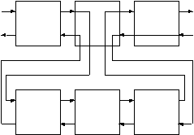

1. 规则
前面我们已经说过，谓词是使用一系列的子句来定义的。以前我们所学习的子句是事实，现在让我们来看看规则吧。规则的实质就是储存起来的查询。它的语法如下：
head :- body
其中，
head是谓词的定义部分，与事实一样，也包括谓词名和谓词的参数说明。:-连接符，一般可以读作‘如果’。body一个或多个目标，与查询相同。
举个例子，上一章中的混合查询--找到能吃的东西和它所在的房间，可以使用如下的规则保存，规则名为where_food/2。
where_food(X,Y) :-
location(X,Y),
edible(X).
用语言来描述就是“在房间Y中有可食物X的条件是：X在Y房间中，并且X可食。”
我们现在可以直接使用此规则来找到房间中可食的物品。
?- where_food(X, kitchen).
X = apple ;
X = crackers ;
no
?- where_food(Thing, 'dining room').
no
它也可以用来判断，
?- where_food(apple, kitchen).
yes
或者通过它找出所有的可食物及其位置，
?- where_food(Thing, Room).
Thing = apple
Room = kitchen ;
Thing = crackers
Room = kitchen ;
no
我们可以使用多个事实来定义一个谓词，同样我们也可以用多个规则来定义一个谓词。例如，如果想让Prolog知道broccoli（椰菜）也是可食物，我们可以如下定义where_food/2规则。
where_food(X,Y) :-
location(X,Y),
edible(X).
where_food(X,Y) :-
location(X,Y),
tastes_yucky(X).
在以前的事实中我们没有把broccoli定义为edible，即没有edible(broccoli).这个事实，所以单靠where_food的第一个子句是不能找出broccoli的，但是我们曾在事实中定义过：tastes_yucky(broccoli).，所以如果加入第二个子句，Prolog就可以知道broccoli也是food（食物）了。下面是它的运行结果。
?- where_food(X, kitchen).
X = apple ;
X = crackers ;
X = broccoli ;
no
1.1. 规则的工作原理
到现在为止，我们所知道的Prolog所搜索的子句只有事实。下面我们来看看Prolog是如何搜索规则的。
首先，Prolog将把目标和规则的子句的头部（head）进行匹配，如果匹配成功，Prolog就把此规则的body部分作为新的目标进行搜索。
实际上规则就是多层的询问。第一层由原始的目标组成，从下一层开始就是由与第一层的目标相匹配的规则的Body中的子目标组成。（这句话有点难理解，请参照下面图来分析）

每一层还可以有子目标，理论上来讲，这种目标的嵌套可以是无穷的。但是由于计算机的硬件限制，子目标只可能有有限次嵌套。
上图显示了这种目标嵌套的流程图，请你注意第一层的第三个目标是如何把控制权回溯到第二层的子目标中的。
在这个例子中，第一层的中间的那个目标的结果依赖于第二层的目标的结果。此目标会把程序的控制权传给他的子目标。
下面我们详细地分析一下Prolog在匹配有规则的子句时是如何工作的。请注意用‘-’分隔的两个数字，第一个数字代表当前的目标级数，第二个数字代表当前目标层中正在匹配的目标的序号。例如：
2-1 EXIT (7) location(crackers, kitchen)
表示第二层的第一个目标的EXIT过程。
我们的询问如下
?- where_food(X, kitchen).
首先我们寻找有where_food/2的子句.
1-1 CALL where_food(X, kitchen)
与第一个子句的头匹配
1-1 try (1) where_food(X, kitchen) ;
第一个where_food/2的子句与目标匹配。
于是第一个子句的Body将变为新的目标。
2-1 CALL location(X, kitchen)
从现在起的运行过程就和我们以前一样了。
2-1 EXIT (2) location(apple, kitchen)
2-2 CALL edible(apple)
2-2 EXIT (1) edible(apple)
由于Body的所有目标都成功了，所以第一层的目标也就成功了。
1-1 EXIT (1) where_food(apple, kitchen)
X = apple ;
第一层的回溯过程使得又重新进入了第二层的目标。
1-1 REDO where_food(X, kitchen)
2-2 REDO edible(apple)
2-2 FAIL edible(apple)
2-1 REDO location(X, kitchen)
2-1 EXIT (6) location(broccoli, kitchen)
2-2 CALL edible(broccoli)
2-2 FAIL edible(broccoli)
2-1 REDO location(X, kitchen)
2-1 EXIT (7) location(crackers, kitchen)
2-2 CALL edible(crackers)
2-2 EXIT (2) edible(crackers)
1-1 EXIT (1) where_food(crackers, kitchen)
X = crackers ;
下面就没有更多的答案了，于是第一层的目标失败。
2-2 REDO edible(crackers)
2-2 FAIL edible(crackers)
2-1 REDO location(X, kitchen)
2-1 FAIL location(X, kitchen)
下面Prolog开始寻找另外的子句，看看它们的头部（head）能否与目标匹配。在此例中，where_food/2的第二个子句也可以与询问匹配。
1-1 REDO where_food(X, kitchen)
Prolog又开始试图匹配第二个子句的Body中的目标。
1-1 try (2) where_food(X, kitchen) ;
第二个where_food/2的子句与目标匹配。
下面将找到不好吃的椰菜。即tastes_yucky的broccoli.
2-1 CALL location(X, kitchen)
2-1 EXIT (2) location(apple, kitchen)
2-2 CALL tastes_yucky(apple)
2-2 FAIL tastes_yucky(apple)
2-1 REDO location(X, kitchen)
2-1 EXIT (6) location(broccoli, kitchen)
2-2 CALL tastes_yucky(broccoli)
2-2 EXIT (1) tastes_yucky(broccoli)
1-1 EXIT (2) where_food(broccoli, kitchen)
X = broccoli ;
回溯过程将让Prolog寻找另外的where_food/2的子句。但是，这次它没有找到。
2-2 REDO tastes_yucky(broccoli)
2-2 FAIL tastes_yucky(broccoli)
2-1 REDO location(X,kitchen)
2-1 EXIT (7) location(crackers, kitchen)
2-2 CALL tastes_yucky(crackers)
2-2 FAIL tastes_yucky(crackers)
2-2 REDO location(X, kitchen)
2-2 FAIL location(X, kitchen)
1-1 REDO where_food(X, kitchen) ;
没有找到更多的where_food/2的子句了。
1-1 FAIL where_food(X, kitchen)
no
在询问的不同层的目标中，即是相同的变量名称也是不同的变量，因为它们都是局部变量。这于其他语言中的局部变量是差不多的。
我们再来分析一下上面的那个例子吧。
where_food(X,Y) :-
location(X,Y),
edible(X).
查询的目标是：
?- where_food(X1, kitchen)
第一个子句的头是：
where_food(X2, Y2)
目标和子句的头部匹配，在Prolog中如果变量和原子匹配，那么变量就绑定为此原子的值。如果两个变量进行了匹配，那么这两个变量将同时绑定为一个内部变量。此后，这两个变量中只要有一个绑定为了某个原子的值，另外一个变量也会同时绑定为此值。所以上面的匹配操作将有如下的绑定。
X1 = _01 ; % 01 为Prolog的内部变量。
X2 = _01
Y2 = kitchen
于是当上述的匹配操作完成后，规则where_food/2的body将变成如下的查询：
location(_01, kitchen), edible(_01).
当内部变量取某值时，例如'apple'，X1和X2将同时绑定为此值，这是Prolog变量和其他语言的变量的基本的区别。如果你学过C语言，容易看出，实际上X1和X2都是指针变量，当它们没有绑定值时，它们的值为NULL，一旦绑定，它们就会指向某个具体的位置，上例中它们同时指向了_01这个变量，其实_01变量还是个指针，直到最后某个指针指向了具体的值，那么所有的指针变量就都被绑定成了此值。
1.2. 使用规则
使用规则我们可以很容易的解决单向门的问题。我们可以再定义有两个子句的谓词来描述这种双向的联系。此谓词为connect/2。
connect(X,Y) :-
door(X,Y).
connect(X,Y) :-
door(Y,X).
它代表的意思是“房间X和Y相连的条件是：从X到Y有扇门，或者从Y到X有扇门"。请注意此处的或者，为了描述这种或者的关系我们可以为某个谓词定义多个子句。
?- connect(kitchen, office).
yes
?- connect(office, kitchen).
yes
我们还可以让Prolog列出所有相连的房间。
?- connect(X,Y).
X = office
Y = hall ;
X = kitchen
Y = office ;
...
X = hall
Y = office ;
X = office
Y = kitchen ;
// ...
使用我们现在所具有的知识，我们可以为“搜索Nani”加入更多的谓词。首先我们定义look/0，它能够显示玩家所在的房间，以及此房间中的物品和所有的出口。
先定义list_things/1，它能够列出某个房间中的物品。
list_things(Place) :-
location(X, Place),
tab(2),
write(X),
nl,
fail.
它和上一章中的最后一个例子差不多。我们可以如下使用它。
?- list_things(kitchen).
apple
broccoli
crackers
no
这地方有一个小问题，它虽然把所有的东西都列出来了，但是最后那个no不太好看，并且如果我们把它和其他的规则连起来用时麻烦就更大了，因为此规则的最终结果都是fail。实际上它是我们扩充的I/O谓词，所以它应该总是成功的。我们可以很容易的解决这个问题。
list_things(Place) :-
location(X, Place),
tab(2),
write(X),
nl, fail.
list_things(AnyPlace).
如上所示，加入list_things(AnyPlace)子句后就可以解决了，第一个list_things/1的子句把所有的物品列出，并且失败，而由于第二个子句永远是成功的，所以list_things/1也将是成功的。AnyPlace变量的值我们并不关心，所以我们可以使用无名变量‘_’来代替它。
list_things(_).
下面我们来编写list_connections/1，它能够列出与某个房间相连的所有房间。
list_connections(Place) :-
connect(Place, X),
tab(2),
write(X),
nl,
fail.
list_connections(_).
我们来试试功能，
?- list_connections(hall).
dining
room
office
true.
终于可以来编写look/0了，
look :-
here(Place),
write('You are in the '),
write(Place),
nl,
write('You can see:'),
nl,
list_things(Place),
write('You can go to:'),
nl,
list_connections(Place).
在我们定义的事实中有here(kitchen).它代表玩家所在的位置。以后我们将学习如何改变此事实。现在来试是功能吧，
?- look.
You are in the kitchen
You can see:
apple
broccoli
crackers
You can go to:
office
cellar
dining room
true.
好了到此，我们已经学会了Prolog的基本编程方法，下一章将总结一下，并再举几个例子，此后我们将进入较深的学习。